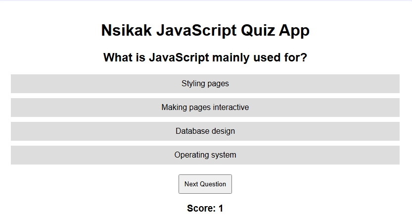
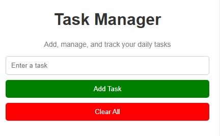
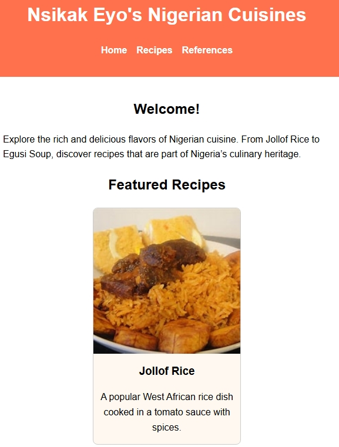
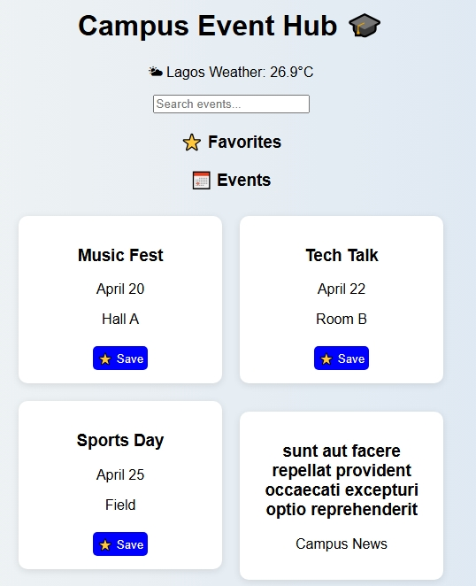

Building Digital Solutions...
👋 Hello, I'm
Building modern digital solutions while delivering exceptional technical support, customer-focused services, and innovative web applications.
Years Professional Experience
Software Projects Completed
Engineering & Technology Paths
Commitment To Excellence
Combining technology, engineering knowledge, communication skills and customer-focused experience to create meaningful digital solutions.
I am Nsikak Christopher Eyo, a Software Developer,
Electrical Engineer and Technical Support professional
passionate about using technology to solve real world
challenges.
My background combines engineering, education,
research, customer support and software development,
allowing me to approach problems from both technical
and human perspectives.
I design and develop responsive websites and
web applications using modern technologies such as
HTML, CSS, JavaScript, Git and GitHub.
Beyond coding, I create organized digital solutions,
documentation systems and user-focused experiences
that improve efficiency.
I believe technology should make life easier,
businesses more productive and users more satisfied.
Continuous learning, innovation and helping people
achieve their goals are the values that guide my
professional journey.
I bring together technical knowledge,
strong communication skills and a customer-first
mindset.
I am reliable, adaptable, detail-oriented and
committed to delivering quality results while
collaborating effectively with teams.
A combination of engineering, education, research, customer support and software development experience.
Delivered Mathematics and Physics lessons, prepared instructional materials, maintained academic records and supported students through effective communication and mentoring.
Conducted online and historical research, verified records, analyzed information and maintained accurate digital documentation.
Currently pursuing a Bachelor of Science in Software Development while building practical experience through real world projects.
A blend of technical knowledge, customer service ability and professional experience.
A collection of software projects demonstrating my growth in web development and digital solutions.

An interactive JavaScript quiz application featuring score tracking, DOM manipulation, recursion and SweetAlert2 integration.

A productivity application that allows users to create, organize, edit and manage daily tasks using modern JavaScript techniques.

A responsive website showcasing Nigerian food culture through an attractive and user friendly digital experience.

A modern campus event platform designed to help students discover, organize, and engage with educational and social activities.
Currently pursuing software development studies including web development, JavaScript programming, databases, software engineering, testing, and Git.
Developed strong analytical, technical, and engineering skills that continue to support my software development journey.